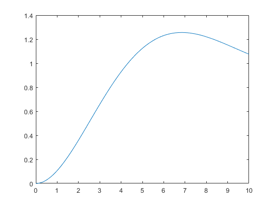
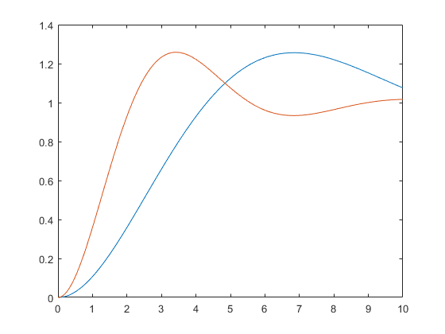
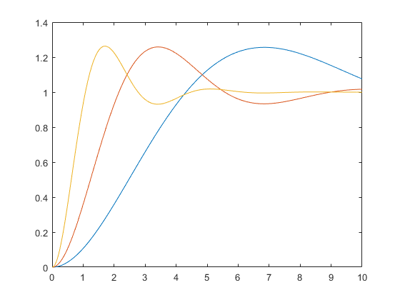
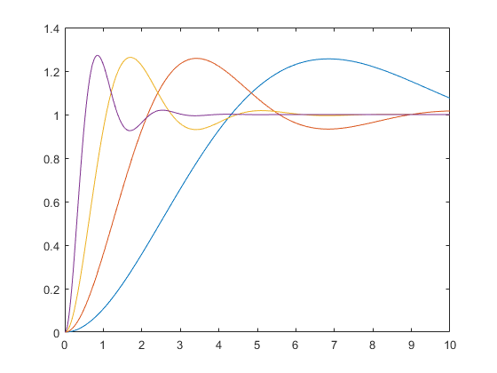
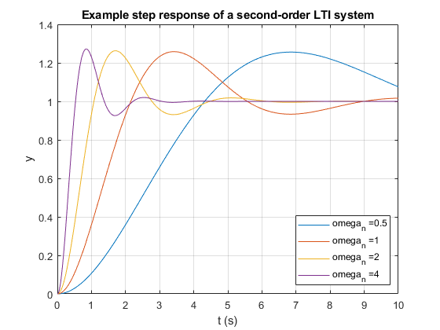

Simulation of a Linear System
The title kinda says it all
Contents
Initializing this bad boy
close all
clear
clc
Setting the second-order LTI system parameters
We can change the parameters of the simulation here instead of having to do it on simulink.
xi = 0.4;
omega_ns = [0.5, 1, 2, 4]; %rad/s
StepSize = 0.01;
finaltime = 10;
Running the simulation
We cycle through all the natural frequencies specified in the omega_ns vector
figure(1)
for i = 1:length(omega_ns)
omega_n = omega_ns(i);
simout = sim('dif_eq','StopTime',num2str(finaltime),'FixedStep',num2str(StepSize)); %Question: does it need to be in the same folder?
Plotting some dope-ass graphs
plot(simout.y.time, simout.y.signals.values);
hold on
    end
Gettin'em legends on point
legend(strcat('omega_n = ', num2str(omega_ns(1))),'Location','southeast') for j = 2:length(omega_ns) %first get the legend handles old_legend=findobj(gcf, 'Type', 'Legend'); %then append the legend with new entry legend([old_legend.String,strcat('omega_n = ', num2str(omega_ns(j)))]) end xlabel('t (s)'); ylabel('y'); grid on; box on; title('Example step response of a second-order LTI system');
Author notes
Apparentely this is used to model solar panels deflection and shit.